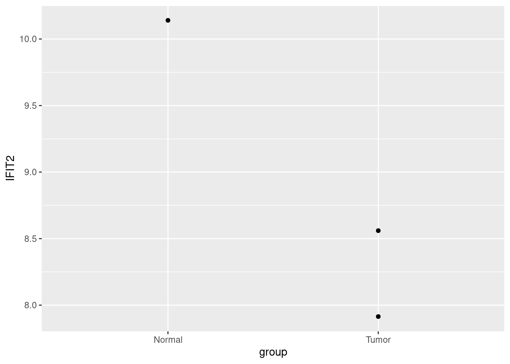

tidy_rowSums = function(df, name, con = where(is.numeric)) {
con = enquo(con)
df[[name]] = rowSums(select(df, !!con))
return(df)
}
iris |>
tidy_rowSums('sum') |>
as_tibble()
## # A tibble: 150 × 6
## Sepal.Length Sepal.Width Petal.Length Petal.Width Species sum
## <dbl> <dbl> <dbl> <dbl> <fct> <dbl>
## 1 5.1 3.5 1.4 0.2 setosa 10.2
## 2 4.9 3 1.4 0.2 setosa 9.5
## 3 4.7 3.2 1.3 0.2 setosa 9.4
## 4 4.6 3.1 1.5 0.2 setosa 9.4
## 5 5 3.6 1.4 0.2 setosa 10.2
## 6 5.4 3.9 1.7 0.4 setosa 11.4
## 7 4.6 3.4 1.4 0.3 setosa 9.7
## 8 5 3.4 1.5 0.2 setosa 10.1
## 9 4.4 2.9 1.4 0.2 setosa 8.9
## 10 4.9 3.1 1.5 0.1 setosa 9.6
## # ℹ 140 more rowsuseR
前言
本册为Vinnish的个人R语言编码案例分享. 本册假定读者具有一定的编程经验, 并且对R中的常用函数, R文件操作较为熟悉.
推荐阅读:
为什么要用R?
‘为什么要用R?’

这不是疑问句, 这是反问句. 2025年, 大模型热潮, Python作为人工智能语言无疑是更好的选择. 但是又是什么让Python比R更受欢迎呢? 比较Python与R, 我们会发现在控制语句上两者十分接近, 包管理方式也十分接近, 或者说现代编程语言彼此之间的共性远大于差异. 区别在于细微的语法差异, 使用者群体的数量与风格, 核心管理团队的定位与发展计划等. 琐碎的区别日积月累后, 造成了不同语言社区的巨大差异. Python在各行各业都大放光彩, R却只局限于统计与文件操作(这不意味着Python能做的事R做不了, 只是要付出无用功). 具体而言, R落后的原因包括:
- 表达式被滥用, 不利于静态分析;
- 混乱的, 迟迟出现的面向对象方法;
- 混乱的包管理与命名规范;
然而, 表达式泛滥, 表示用户可以使用表达式简单的实现各种实用的元编程模板, 让用户可以写代码写的飞快; 面向对象基础薄弱, 意味着用户只需要爽写函数就可以了; 在快速开发, 原型实现与探索性数据分析中, 上述缺点都是R在当下无可替代的理由. 更何况R中还有浩瀚如海班的历史方法可以实用.
编程语言只是实现想法的工具, 在想象的领域, 您可以信马由缰.
现代的R
Rstudio公司(现名Posit)为R语言做出了无比的贡献, 其为R贡献了各种实用又现代的软件包, 引入现代编程任务与框架. 甚至说, 通过对原版R(base R)中各种功能的封装或改良, 将R改良为了一门新的语言–tidy R(’Q’语言或者’P’语言? ).
但是我们也需要注意到, tidy R中多数功能是对base R的封装, 也就意味着base R中同样能实现. 由于tidy R的框架性, tidy R在一系列任务中如鱼得水的同时, 没能覆盖到另一些任务上, 比如在tidy R框架下对一个数据框中, 计算每一行中所有数值相加的结果. tidy R中并非不能进行, 但是效率与丑陋的实现可能都令人难以接受. 这就要求我们同时也要对tidy R是如何封装base R的有所了解.
在快速的原型开发阶段, 私有以下建议:
- 成为tidy R高手, 更是base R高手
- 用新不用旧:
- tibble而不是data.frame
- map而不是lapply
- R6而不是S4
- 除迫不得已外不行名索引
- 除矩阵运算外不使用矩阵
“数据框”思维
数据框(data.frame)是R中基础的数据结构之一. “数据框”思维即是指在R中把我们需要完成的任务通过转化为我们最熟悉的数据结构–数据框, 把陌生的问题转换为熟悉的问题并加以逐步解决. 数据框是列表的特殊形式. 有关R中的数据结构, 详情见R语言高手计划.
vec_1 = 1:3
vec_2 = 4:6
lst_raw = list(a = vec_1, b = vec_2)
df_raw = data.frame(a = vec_1, b = vec_2)
lst_from_df = as.list(df_raw)
df_from_lst = as.data.frame(lst_raw)
identical(lst_raw, lst_from_df)
## [1] TRUE
identical(df_raw, df_from_lst)
## [1] TRUE数据框可以看作等长向量组成的列表. 如果向量不等长, 或者包含不是向量的列, 则会得到意想不到(unexpected)的结果, 所以尽量不应该尝试用原生data.frame装列表.
vec_1 = 1:3
vec_2 = 4:7
df_unequal_length = tryCatch(data.frame(a = vec_1, b = vec_2), error = \(e) e)
df_contains_lst = data.frame(a = vec_1, b = as.list(vec_1))
df_unequal_length
## <simpleError in data.frame(a = vec_1, b = vec_2): arguments imply differing number of rows: 3, 4>
df_contains_lst
## a b.1L b.2L b.3L
## 1 1 1 2 3
## 2 2 1 2 3
## 3 3 1 2 3tibble是特殊形式的数据框, 与原生的data.frame的不同之处在于:
- 控制台打印出来更好看;
- 抛弃了列名;
- 可以以列表作为一列;
- 其它;
vec_1 = 1:3
vec_2 = 4:6
df_raw = data.frame(a = vec_1, b = vec_2)
tb_raw = tibble(a = vec_1, b = vec_2)
tb_lst = tibble(a = vec_1, b = as.list(vec_2))
rownames(df_raw) = c('a', 'b', 'c')
rownames(tb_raw) = c('a', 'b', 'c')
## Warning: Setting row names on a tibble is deprecated.
df_raw
## a b
## a 1 4
## b 2 5
## c 3 6
tb_raw
## # A tibble: 3 × 2
## a b
## * <int> <int>
## 1 1 4
## 2 2 5
## 3 3 6
tb_lst
## # A tibble: 3 × 2
## a b
## <int> <list>
## 1 1 <int [1]>
## 2 2 <int [1]>
## 3 3 <int [1]>在实际工作里, 我们可能要处理一些基因表达数据. 于是我们打开了UCSC Xena, 下载了别人的预制数据. 我们惊喜的发现第一列是一列数字, 这是基因的ENTREZ ID而不是我们熟悉的Symbol. 我们需要将其转换为熟悉的Symbol.
所幸我们还有一个map数据, 其内包含了ENTREZ ID与Symbol的对应关系.
df_expr = read_tsv('examples/expr.tsv') |>
mutate(sample = as.character(sample))
df_expr
## # A tibble: 22,583 × 4
## sample `TCGA-FV-A495-01` `TCGA-G3-A3CH-11` `TCGA-CC-A3MB-01`
## <chr> <dbl> <dbl> <dbl>
## 1 55160 11.2 11.0 11.2
## 2 64344 5.25 5.38 4.00
## 3 56163 4.20 0 0
## 4 9921 11.5 11.7 12.1
## 5 26994 9.60 11.4 9.82
## 6 11342 9.63 10.8 10.6
## 7 2970 11.8 11.5 12.1
## 8 28954 5.68 3.54 3.56
## 9 246754 0 1.47 0
## 10 349667 8.75 7.91 7.98
## # ℹ 22,573 more rows
df_map = read_tsv('examples/probemap.tsv') |>
mutate(ENTREZID = as.character(ENTREZID))
df_map
## # A tibble: 17,330 × 2
## SYMBOL ENTREZID
## <chr> <chr>
## 1 ARHGEF10L 55160
## 2 HIF3A 64344
## 3 RNF17 56163
## 4 RNF10 9921
## 5 RNF11 26994
## 6 RNF13 11342
## 7 GTF2IP1 2970
## 8 REM1 28954
## 9 MTVR2 246754
## 10 RTN4RL2 349667
## # ℹ 17,320 more rows如我们熟悉的那样, 转录组数据一般以基因作为行名, 样本作为列名, 这继承自过去转录组对照试验样本量较小的特点. 然而在这里, 我们将只是用最简单, 最基础的思路, 以’数据框’的形式处理经典的转录组分析任务.
如果你已经读过了前言中提及的书目, 你可能会有以下两种方案:
- 连接表;
full_join(df_map, df_expr, c('ENTREZID' = 'sample'))
## # A tibble: 22,586 × 5
## SYMBOL ENTREZID `TCGA-FV-A495-01` `TCGA-G3-A3CH-11` `TCGA-CC-A3MB-01`
## <chr> <chr> <dbl> <dbl> <dbl>
## 1 ARHGEF10L 55160 11.2 11.0 11.2
## 2 HIF3A 64344 5.25 5.38 4.00
## 3 RNF17 56163 4.20 0 0
## 4 RNF10 9921 11.5 11.7 12.1
## 5 RNF11 26994 9.60 11.4 9.82
## 6 RNF11 26994 9.60 11.4 9.82
## 7 RNF13 11342 9.63 10.8 10.6
## 8 GTF2IP1 2970 11.8 11.5 12.1
## 9 REM1 28954 5.68 3.54 3.56
## 10 MTVR2 246754 0 1.47 0
## # ℹ 22,576 more rows- 字典;
table_entrez2symbol = df_map |> pull(SYMBOL, ENTREZID)
table_entrez2symbol[1:3]
## 55160 64344 56163
## "ARHGEF10L" "HIF3A" "RNF17"
df_maped = df_expr |>
mutate(sample = table_entrez2symbol[sample])
df_maped
## # A tibble: 22,583 × 4
## sample `TCGA-FV-A495-01` `TCGA-G3-A3CH-11` `TCGA-CC-A3MB-01`
## <chr> <dbl> <dbl> <dbl>
## 1 ARHGEF10L 11.2 11.0 11.2
## 2 HIF3A 5.25 5.38 4.00
## 3 RNF17 4.20 0 0
## 4 RNF10 11.5 11.7 12.1
## 5 RNF11 9.60 11.4 9.82
## 6 RNF13 9.63 10.8 10.6
## 7 GTF2IP1 11.8 11.5 12.1
## 8 REM1 5.68 3.54 3.56
## 9 MTVR2 0 1.47 0
## 10 RTN4RL2 8.75 7.91 7.98
## # ℹ 22,573 more rows在高维矩阵里, 人们习惯将行作为样本, 列作为特征, 所以我们应该对这个列表进行一次转置(transpose). 我们试图直接使用t函数操作这个数据框, 结果很不理想:
df_maped |> t() |> as_tibble()
## Warning: The `x` argument of `as_tibble.matrix()` must have unique column names if
## `.name_repair` is omitted as of tibble 2.0.0.
## ℹ Using compatibility `.name_repair`.
## # A tibble: 4 × 22,583
## V1 V2 V3 V4 V5 V6 V7 V8 V9 V10 V11 V12 V13
## <chr> <chr> <chr> <chr> <chr> <chr> <chr> <chr> <chr> <chr> <chr> <chr> <chr>
## 1 ARHGE… "HIF… "RNF… RNF10 "RNF… "RNF… GTF2… "REM… "MTV… "RTN… <NA> <NA> "FGF…
## 2 11.18… " 5.… " 4.… 11.5… " 9.… " 9.… 11.8… " 5.… " 0.… " 8.… "11.… " 0.… " 7.…
## 3 11.01… " 5.… " 0.… 11.6… "11.… "10.… 11.5… " 3.… " 1.… " 7.… " 9.… " 0.… " 8.…
## 4 11.24… " 4.… " 0.… 12.0… " 9.… "10.… 12.1… " 3.… " 0.… " 7.… " 8.… " 0.… " 8.…
## # ℹ 22,570 more variables: V14 <chr>, V15 <chr>, V16 <chr>, V17 <chr>,
## # V18 <chr>, V19 <chr>, V20 <chr>, V21 <chr>, V22 <chr>, V23 <chr>,
## # V24 <chr>, V25 <chr>, V26 <chr>, V27 <chr>, V28 <chr>, V29 <chr>,
## # V30 <chr>, V31 <chr>, V32 <chr>, V33 <chr>, V34 <chr>, V35 <chr>,
## # V36 <chr>, V37 <chr>, V38 <chr>, V39 <chr>, V40 <chr>, V41 <chr>,
## # V42 <chr>, V43 <chr>, V44 <chr>, V45 <chr>, V46 <chr>, V47 <chr>,
## # V48 <chr>, V49 <chr>, V50 <chr>, V51 <chr>, V52 <chr>, V53 <chr>, …糟糕的事情有三件:
- tibble中取消了列名, 所以我们没法把Symbol挪走, 他会随数值一起转置, 并且把所有列的类型都变成字符串;
- 数据结构不再是tibble/data.frame了, 而是矩阵, 所以我们需要用as_tibble将其重新变为tibble;
- 但如同之前所说, tibble没有行名, 所以原来的列名变成行名以后又被tibble删除了;
所以我们需要写一个自定义函数来解决这件事情:
tidy_t = function(df, id_new, id_old = colnames(df)[[1]]) {
df |>
column_to_rownames(id_old) |> # 有的时候我们还是要向过去妥协的~
t() |>
as_tibble(rownames = id_new)
}
tryCatch(tidy_t(df_maped, 'sample'), error = \(e) e)
## <simpleError in `.rowNamesDF<-`(x, value = value): duplicate 'row.names' are not allowed>怎么还是不行呢? 根据报错信息, 我们可以知道出在column_to_rownames, 它尝试把id_old(sample)这一列变为数据框的行名, 并且返回一个带行名的df而不是tb, 但是因为有的基因名是重复的, 所以我们把它作为列名以前, 需要去除重复的部分. 尽管我们可以使用函数distinct去除某一列中重复的部分, 但是我们并不知道它是按什么规则去除行的, 也不知道这个规则是否合适. 按道理说, 对样本进行取平均/最大/最小都是合适的, 而且还要考虑到有的基因不没有重复, 我们只要计算那些重复了的基因就好了, 这样还提高了效率, 让我们再来设计一个函数!
merge_expression = function(df, by, symbol = 'symbol') {
match.arg(by, c('max', 'min', 'mean'))
symbol_duplicated = df[[symbol]][duplicated(df[[symbol]])]
if (length(symbol_duplicated) != 0) {
df_remain = df[!df[[symbol]] %in% symbol_duplicated, ]
df_patch = df[df[[symbol]] %in% symbol_duplicated, ]
lst_patch = split(df_patch[, -1], df_patch[[symbol]])
if (by == 'max') {
df_patched = lst_patch |>
map(~ .x |> map(max)) |>
bind_rows()
} else if (by == 'min') {
df_patched = lst_patch |>
map(~ .x |> map(max)) |>
bind_rows()
} else if (by == 'mean') {
df_patched = lst_patch |>
map(~ .x |> map(max)) |>
bind_rows()
}
df_patched = df_patched |>
mutate(symbol = names(lst_patch)) |>
relocate(symbol)
colnames(df_patched) = colnames(df_remain)
df = bind_rows(df_remain, df_patched)
}
return(df)
}
df_perfect = df_maped |>
merge_expression('mean', 'sample') |>
tidy_t('sample')
df_perfect
## # A tibble: 3 × 17,328
## sample ARHGEF10L HIF3A RNF17 RNF10 RNF13 GTF2IP1 REM1 MTVR2 RTN4RL2 FGFR1OP2
## <chr> <dbl> <dbl> <dbl> <dbl> <dbl> <dbl> <dbl> <dbl> <dbl> <dbl>
## 1 TCGA-F… 11.2 5.25 4.20 11.5 9.63 11.8 5.68 0 8.75 7.68
## 2 TCGA-G… 11.0 5.38 0 11.7 10.8 11.5 3.54 1.47 7.91 8.75
## 3 TCGA-C… 11.2 4.00 0 12.1 10.6 12.1 3.56 0 7.98 8.29
## # ℹ 17,317 more variables: TSKS <dbl>, ATRX <dbl>, PMM2 <dbl>, ASS1 <dbl>,
## # NCBP1 <dbl>, ZNF709 <dbl>, ZNF708 <dbl>, NCBP2 <dbl>, DISC1 <dbl>,
## # CAMK1 <dbl>, RPL37 <dbl>, SPR <dbl>, ZNF707 <dbl>, CAMK4 <dbl>,
## # ZNF704 <dbl>, GOLGA6B <dbl>, RNF112 <dbl>, ZC3H14 <dbl>, SPN <dbl>,
## # LRRTM1 <dbl>, GRIN1 <dbl>, RBMY1A3P <dbl>, DHX8 <dbl>, DHX9 <dbl>,
## # TCOF1 <dbl>, LRRTM3 <dbl>, NUP98 <dbl>, XPC <dbl>, SLC12A2 <dbl>,
## # GRINA <dbl>, LRRTM2 <dbl>, NUP93 <dbl>, HAP1 <dbl>, CAMKV <dbl>, …就这样, 在我们的努力之下, 我们得到了我们想要的结果. 下面我们想比较正常样本与肿瘤样本中某个基因的表达. 根据TCGA的命名规则, 以11结尾的是癌旁组织的, 01结尾则是原位肿瘤.
df_perfect |>
select(sample, IFIT2) |>
mutate(group = ifelse(str_ends(sample, '11'), 'Normal', 'Tumor')) |>
ggplot() +
geom_point(aes(group, IFIT2))
以上是一个将经典的转录组数据转换为数据框并使用最为基础简单的思路处理的案例. 专业的, 经典的, 受到业界承认的工具固然重要, 然而如果对于所要进行的任务有具体的认识, 能用简单的语言清晰的描述它, 那么专业的工具的功能也能实现的七七八八了.
实用的表达式
我们都很熟悉R中的管道符|>或者%>%, 前者原生于R中, 后者是tidy R提供的一个中缀函数(如同%in%). 下都以|>为例. |>将原先嵌套的函数展开, 内在前, 外在后.
问题一: 请问下列代码的执行顺序是如何的? 是不是先把iris这个数据框进行累加, 然后将其转换为tibble的?
# 等价于as_tibble(tidy_rowSums(iris, "sum"))
iris |>
tidy_rowSums('sum') |>
as_tibble()问题二: 已知stop会抛出一个错误从而报错, 以下这个函数是会报错还是返回一个1?
f = function(value = stop('Error! ')) {
return(1)
}
f()